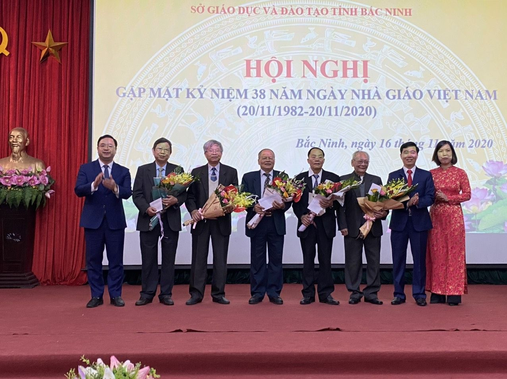

Gặp mặt kỷ niệm 38 năm ngày Nhà giáo Việt Nam 20/11
Ngày 16/11/2020, Sở Giáo dục và Đào tạo Bắc Ninh tổ chức Hội nghị gặp mặt kỷ niệm 38 năm ngày Nhà giáo Việt Nam (20/11/1982-20/11/2020).
Tham dự buổi gặp mặt có các đồng chí lãnh đạo Sở, lãnh đạo Công đoàn ngành, các đồng chí nguyên là lãnh đạo Sở, lãnh đạo Công đoàn ngành, nguyên cán bộ thuộc cơ quan Sở qua các thời kỳ, cùng toàn thể cán bộ công chức, viên chức và người lao động cơ quan Sở Giáo dục và Đào tạo.
Phát biểu tại buổi gặp mặt, đồng chí Ngô Văn Liên, Ủy viên BTV Tỉnh uỷ, Giám đốc Sở Giáo dục và Đào tạo gửi lời chúc mừng và thông tin tới toàn thể Hội nghị những thành tích nổi bật của ngành GDĐT Bắc Ninh đã đạt được trong những năm vừa qua, đặc biệt là năm học 2019-2020, đồng thời cũng chỉ ra những khó khăn, bất cập cần phải tiếp tục khắc phục thời gian tới. Đồng chí Giám đốc Sở GDĐT mong muốn rằng, bằng những kinh nghiệm và tâm huyết với ngành, thời gian tới các đồng chí nguyên lãnh đạo Sở, Công đoàn ngành, cùng toàn thể cán bộ thuộc cơ quan Sở qua các thời kỳ luôn quan tâm, cố vấn cho ngành để ngày càng phát triển mạnh hơn nữa, xứng đáng là tỉnh có phong trào giáo dục và đào tạo vững mạnh trong tốp đầu của cả nước.
Tại buổi gặp mặt, Giám đốc Sở GDĐT tặng hoa và quà chúc mừng các đồng chí nguyên lãnh đạo Sở, lãnh đạo Công đoàn ngành, nhà giáo nhân dân, nhà giáo ưu tú, cán bộ thuộc cơ quan Sở qua các thời kỳ.
Tại Hội nghị, đồng chí Lê Nho Nùng – Nguyên Giám đốc Sở GDĐT thay mặt các đồng chí nguyên lãnh đạo Sở phát biểu chúc mừng những thành tích mà ngành GDĐT đã gặt hái được trong thời gian qua, đồng thời khẳng định luôn dõi theo và quan tâm, giúp đỡ tới công tác Giáo dục và Đào tao của tỉnh nhà./.
Một số hình ảnh!
Lãnh đạo Sở GDĐT tặng hoa chúc mừng các đồng chí nguyên lãnh đạo Sở GDĐT, lãnh đạo Công đoàn ngành qua các thời kỳ

Lãnh đạo Sở tặng hoa chúc mừng các Nhà giáo nhân dân, nhà giáo ưu tú
Giám đốc Sở GDĐT chụp ảnh lưu niệm với các đồng chí nguyên là lãnh đạo Sở qua các thời kỳ
Lãnh đạo Sở và lãnh đạo các phòng thuộc Sở chụp ảnh lưu niệm với toàn thể cán bộ công tác tại cơ quan Sở GDĐT qua các thời kỳ
.jpg)
Đ/c Giám đốc Sở chụp ảnh lưu niệm với các đồng chí can bộ nữ công tác tại Sở GDĐT qua các thời kỳ